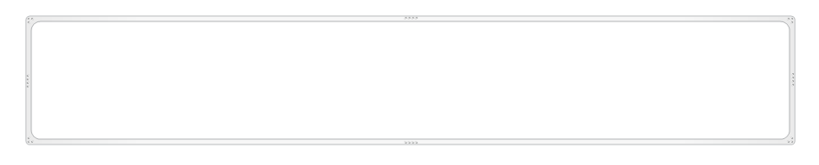

If a script section is used several times in a same document template, tag <fragment> can be used to define the script section and its attributes.
It can then be called from <gendoc> tags inside the same template document
<fragment> tag can contain the following attributes:
<fragment name=’displayDiagram’ importedBundles=’commons;gmf;papyrus’>
<arg name=’element’ type=’uml::Element’/>
[for (d:Diagram|element.getPapyrusDiagrams())]<drop/>
Diagram [d.name/] :
<image object=’[d.getDiagram()/]’ maxW=’true’><drop/>

</image>
[/for]<drop/>
</fragment>
<gendoc>
[for(p:Package|Package.allInstances())]
[p.name/]
[p.displayDiagram()/]
[/for]
</gendoc>